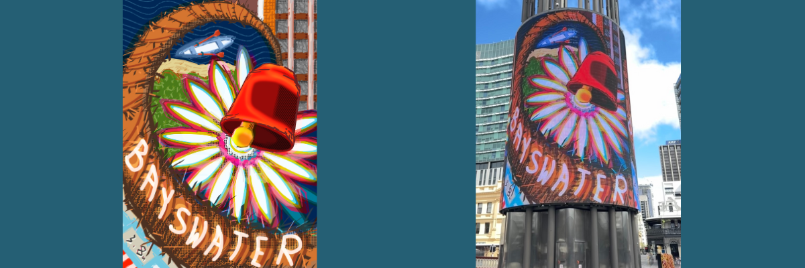
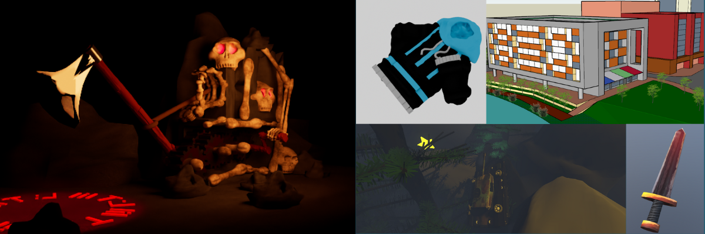
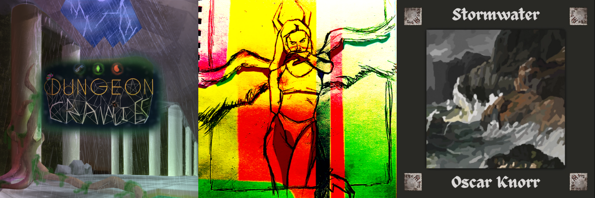

About My Design Work
Outside of games and traditional art, I also practice digital design, web design, illustration and 3d modelling which I mostly use for making game assets. Listed below are some other miscellaneous design categories which include works completed for other projects outside of my own main fields. This website is not listed but was created entirely by me.
Showcase in Pixels
The showcase in pixels is an annual statewide competition held by local goverments to promote young creatives in their communities. I submitted this design in 2023 for the City of Bayswater, and was chosen by a panel of judges to represent Bayswater in the digital/proffesional category.
My work was shown on the Yagan Square digital tower, and went on to win overall across the state for it's category. This piece was credited for its bold use of colour and its inclusion of city of bayswater icons. This piece gave me experience in working alongside and communicating with the government and my community to create an effective piece of work.
3D Modelling
I've made 3d models for a variety of purposes, including general modelling, game assets, animated models, and urban planning designs. I am familiar with blender, and sketch up, but am more experienced with using maya. I am also familiar with texturing and sculpting processes and exporting assets to game engines.
Album Artworks
I've made a few designs for album covers, one for my own experimental track (for my game) and others for other people's music.